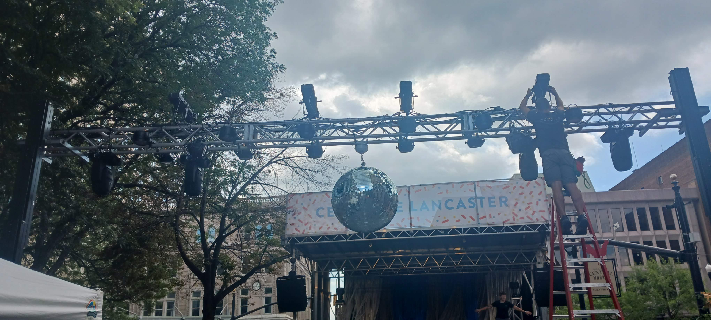

My name is Alexander Breniser, but many know me as Sasha. I am a junior at Millersville University studying Entertainment Technology and Theatre, with minors in Computer Aided Drafting & Design, and Japanese Cultural Studies. I have experience as an entertainment technician, CNC machinist, and a stage carpenter. Feel free to take a look around my website to see my works!

In this website, you can see the Gallery for my previous and current works and projects. In the Resume section, you can read the experience that I have under my belt. In the About Me/Contact page, you can learn a little bit about who I am and how to reach me.
© 2024, Alexander "Sasha" Breniser. All rights reserved.